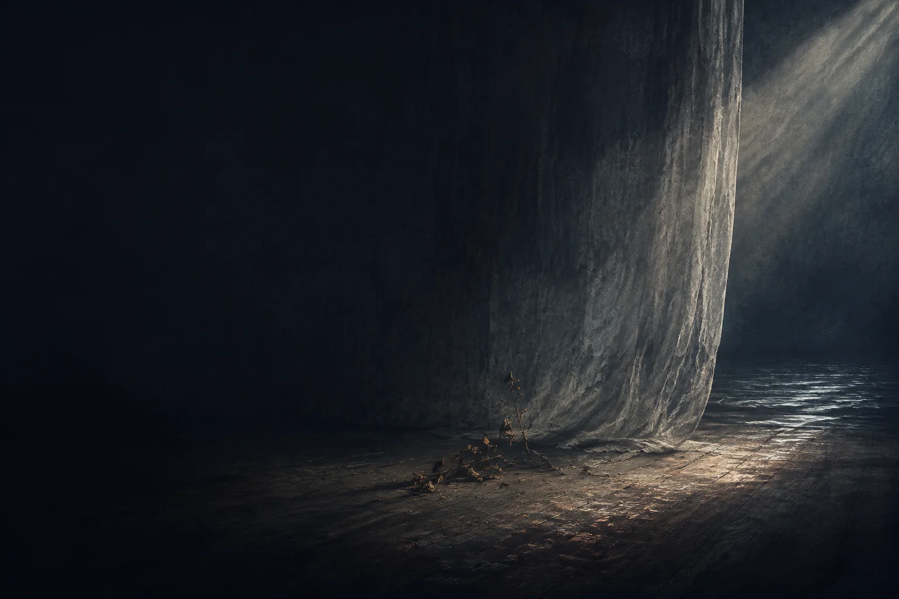

现实观编辑导读
世界有其所是
现实、身体、时间与行动后果，不会因为愿望动人就改变；判断要接触事实，也要允许证据让自己改看法。事实能够否决错误道路，却不能独自决定什么值得。
“事实能说出世界是什么，不能独自回答什么值得。”原文 · 真
把这层意思读准
不能简化为“现实成功就是真理”或“适应外部评价”：结果需要归因与校准，也不能给人格定价。
THE GROUND / 价值根基
不要求世界迁就自己，
也不允许世界取消自己。
五个层面为编辑归纳。点击展开主张与边界。
现实、身体、时间与行动后果，不会因为愿望动人就改变；判断要接触事实，也要允许证据让自己改看法。事实能够否决错误道路，却不能独自决定什么值得。
“事实能说出世界是什么，不能独自回答什么值得。”原文 · 真
不能简化为“现实成功就是真理”或“适应外部评价”：结果需要归因与校准，也不能给人格定价。

新补读 / 哈姆雷特
一句洞见，也要回头照见说出它的人。
从五幕二十场，理解主体、承担与生命的分量。
五部作品 / 五个追问
嫩叶与眼泪，诗与一杯水，雨中的步调。
这些细节，让根基有了可感的重量。
从根基，走入生活
世界判断辨认真、值得与不可交换；分寸决定取舍以何种比例呈现。两者都要经过“不骗自己、不吃人”的边界。
真、情、苦、手、人、时，是这些根基进入生活的六扇门。
关系中的根基
不因亲密取消独立，不因独立拒绝照料。
原文节选 · 树林为生成意象RETURN TO LIFE / 四问练习
选一件正在考虑或已经发生的事，按需要写下几句。可以留空，也可以写“还不知道”；这不是测验，没有总分。
书写只在当前页面保留，切换阅读方式不会丢失；刷新或关闭页面会清空。
这些问题是为了帮助生活。写到这里，也可以收起账本，休息、相聚，或去做一件手边的事。